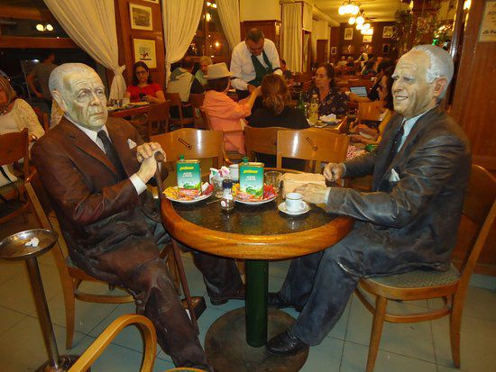

Galería de Trabajos
Escultura
Creación de obras escultóricas originales de autoría propia y restauración.
Restauración de Antigüedades
Conservación, reparación, dorados antiguos, restauración de marcos y piezas deterioradas.
Arquitectura y Reformas
Planificación y ejecución de obras de restauración arquitectónica.

